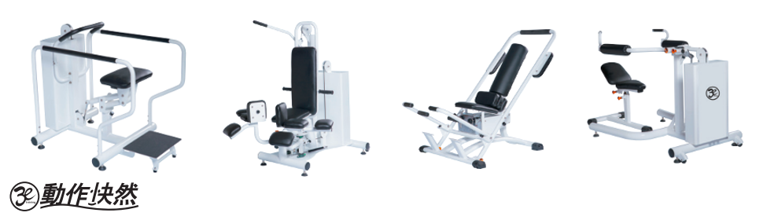
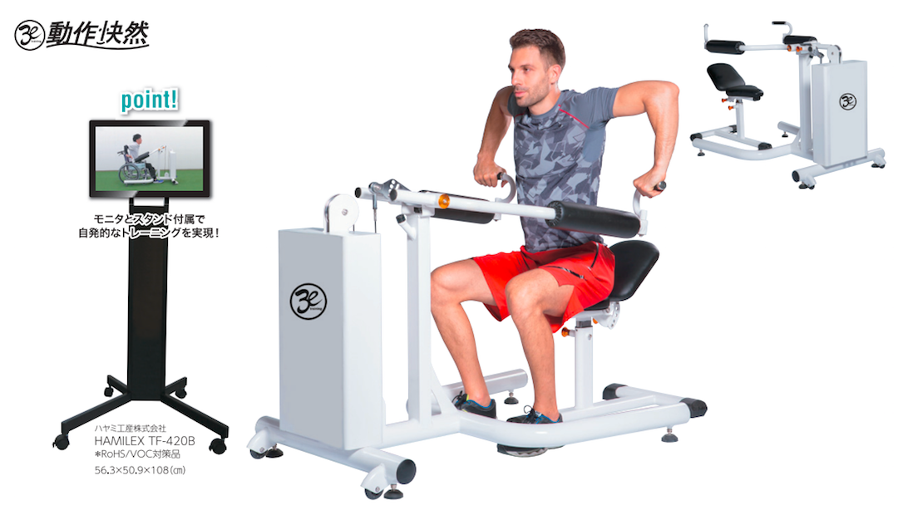
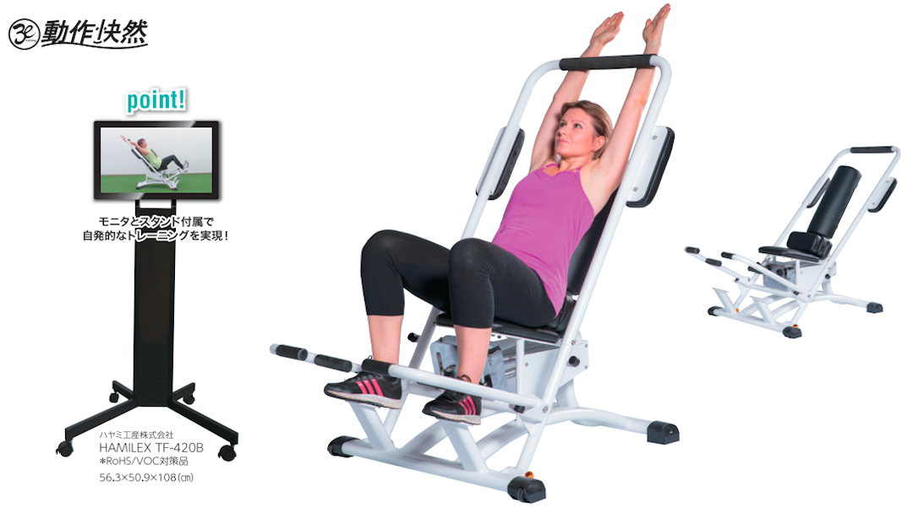
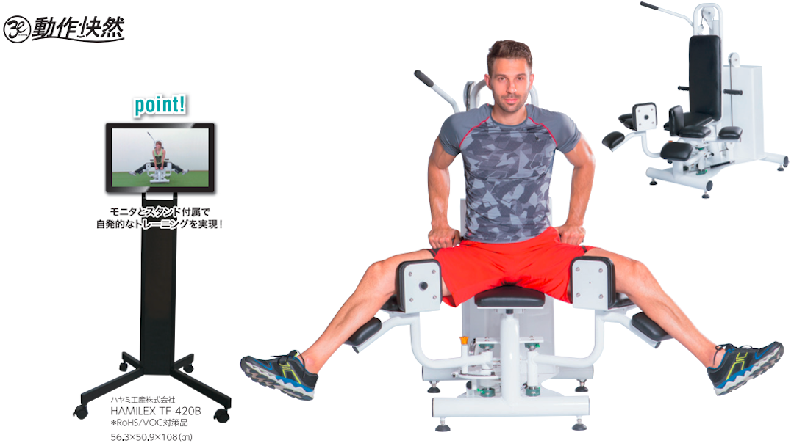
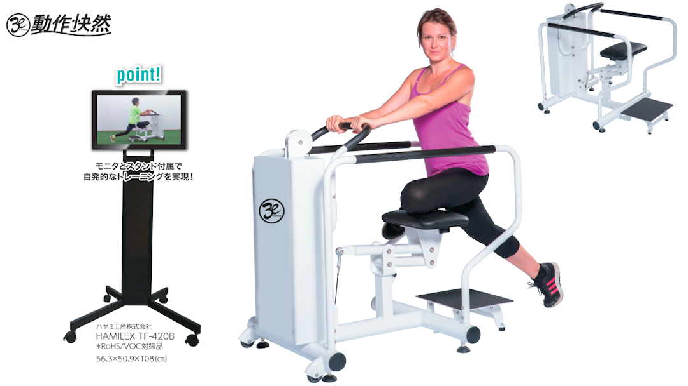
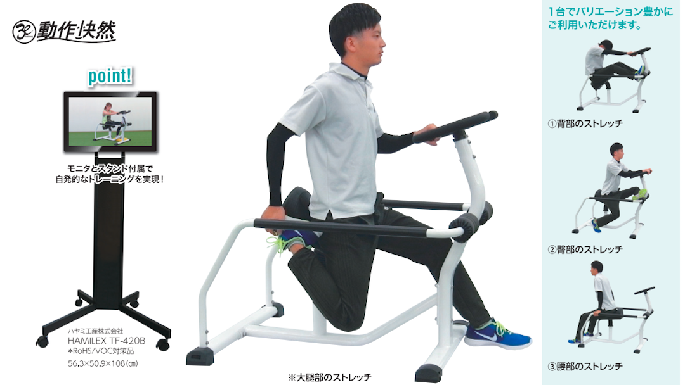

〒811-0202
福岡市東区和白丘3丁目27-64
TEL: 092-605-6006 / FAX: 092-605-6007
092-605-6006
〜 筋力づくりから健康づくりへ 〜
快然フィットネスマシンとは？
日常生活動作やスポーツ動作をスムーズに行うポイントの１つとして、【動きの中で伸ばされる筋肉をタイミング良く脱力する】ことが挙げられます。
しかし、姿勢不良や加齢に伴い必要に応じて脱力するという感覚が徐々に失われていきます。
この快然フィットネスマシンは体の要となる腰本来の動きを呼び起こす事で、姿勢を改善し各部位のしなやかな動きを導いていきます。また神経と筋肉の繋がりを促進することで、緊張と脱力のバランスを改善していきます。
快然フィットネスサイト




